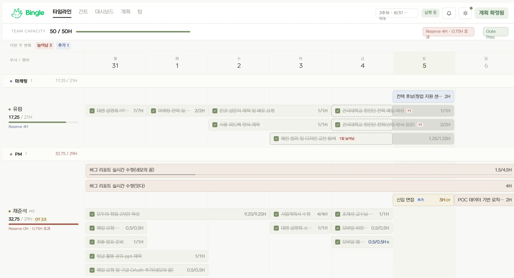
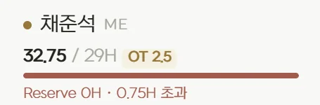
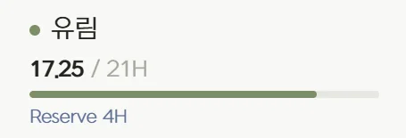
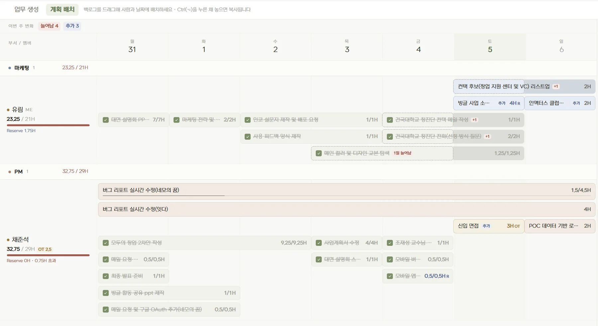
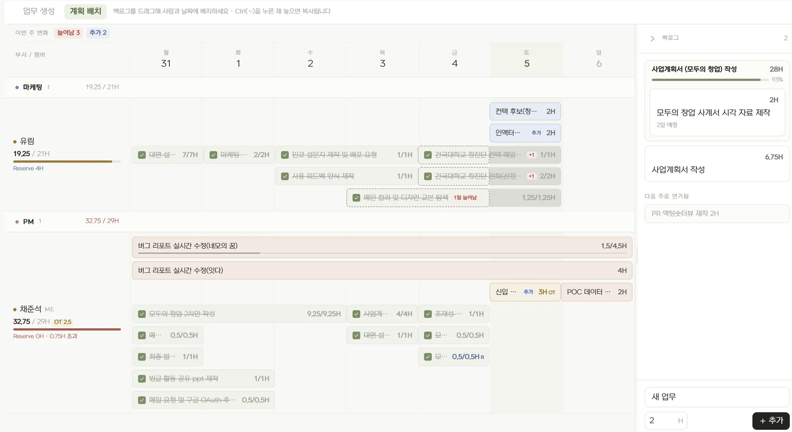
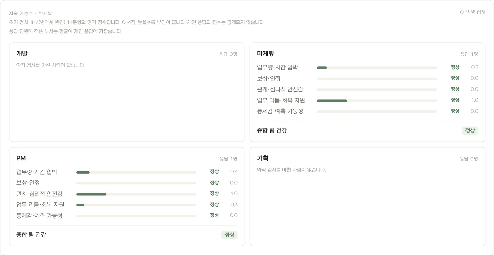
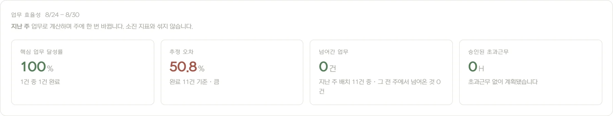
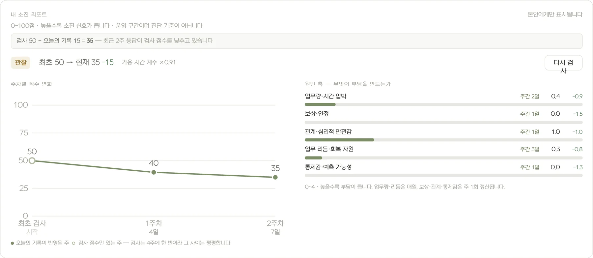

PROBLEM 1
실제 업무 부담 파악의 어려움
- 구성원별 실제 투입시간, 초과 업무, 남은 가용시간을 파악하기 어렵습니다.
- 매주 똑같은 시간을 기준으로 계획이 세워집니다.



대부분의 도구는 업무를 정리할 뿐,
지금 팀의 실제 업무 부담과 팀원 상태를 계획에 반영하지 못합니다.
오래가는 팀이,
멀리 갈 수 있다고 믿습니다.
좋은 계획은 지속할 수 있는 만큼 정확히 약속하는 것에서 시작합니다.
실제로 할 수 있는 범위를 먼저 계산하고, 그 안에서 팀의 실행력을 높입니다.





Bingle의 핵심은 더 현실적이고 효율적인 계획입니다.
| 비교 기준 | 일반 업무관리 도구 | Bingle |
|---|---|---|
| 계획 기준 | 계약시간 · 빈 캘린더 | 초과업무·번아웃 반영한 실질 가용시간과 배정 상한 |
| 진행 상황 | 담당자에게 물어보거나 상태를 수동 갱신 | 실제 업무시간 기반 진행률·지연 시각화 |
| 초과 시 대응 | 리더 재량 조정 | 이관 · 마감 조정 · 범위 축소안 수치 비교 |
| 팀 상태 | 별도 설문 · 관찰과 대화에 의존 | 주 단위 지속가능성 분석 · 개인 번아웃 리포트 |
| 성과 관점 | 완료한 업무량 중심 | 효율성과 지속가능성을 함께 |
Bingle은 지금 외부 PoC 팀을 찾고 있습니다.
업무 플로우를 바꾸지 않고 Bingle을 경험해 보세요.
현재의 업무 방식과 가장 큰 고민을 들려주세요.